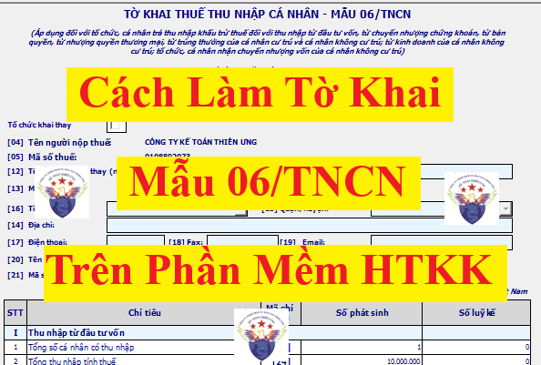
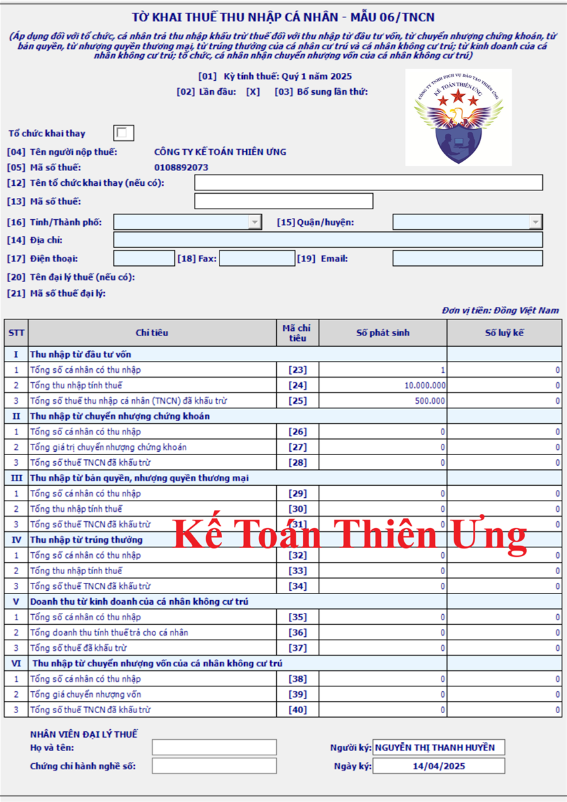
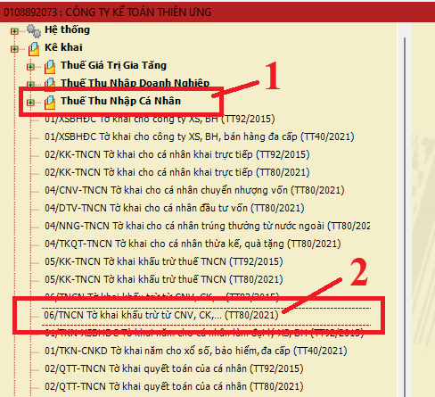
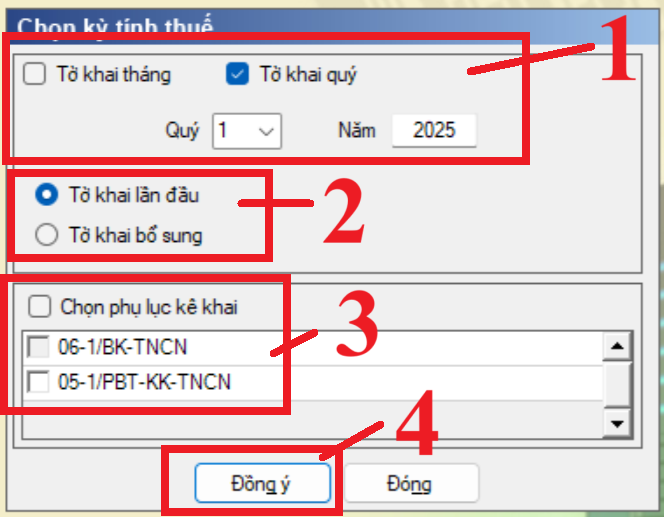

Hướng dẫn cách làm tờ khai thuế thu nhập cá nhân mẫu 06/TNCN theo thông tư 80/2021/TT-BTC trên phần mềm HTKK
Tờ khai thuế TNCN mẫu 06/TNCN theo thông tư 80/2021/TT-BTC là Tờ khai thuế thu nhập cá nhân áp dụng đối với tổ chức, cá nhân trả thu nhập (doanh nghiệp) khấu trừ thuế đối với thu nhập từ các nguồn thu nhập sau:

+ Thu nhập từ đầu tư vốn
+ Thu nhập Từ chuyển nhượng chứng khoán
+ Thu nhập từ bản quyền,
+ Thu nhập từ nhượng quyền thương mại,
+ Thu nhập từ trúng thưởng của cá nhân cư trú và cá nhân không cư trú;
+ Thu nhập từ kinh doanh của cá nhân không cư trú; tổ chức, cá nhân nhận chuyển nhượng vốn của cá nhân không cư trú
+ Thu nhập Từ chuyển nhượng chứng khoán
+ Thu nhập từ bản quyền,
+ Thu nhập từ nhượng quyền thương mại,
+ Thu nhập từ trúng thưởng của cá nhân cư trú và cá nhân không cư trú;
+ Thu nhập từ kinh doanh của cá nhân không cư trú; tổ chức, cá nhân nhận chuyển nhượng vốn của cá nhân không cư trú
1. Mẫu tờ khai 06/TNCN trên phần mềm HTKK:

2. Cách làm tờ khai thuế TNCN mẫu 06/TNCN theo Thông tư 802021/TT-BTC trên phần mềm HTKK
Bước 1: Đăng nhập vào phần mềm HTKK
Mở phần mềm HTKK => Đăng nhập Mã số thuế của doanh nghiệp muốn kê khai vào phần mềm => Nhập/Lựa chọn xong MST => Rồi ấn “Đồng ý”
Bước 2: Lựa chọn tờ khai
Vào mục "Thuế Thu Nhập Cá Nhân" => Bấm chọn "06/TNCN tờ khai khấu trừ từ CNV, CK... (TT80/2021)"
Đây là tờ khai thuế TNCN: Áp dụng đối với tổ chức, cá nhân trả thu nhập khấu trừ thuế đối với thu nhập từ đầu tư vốn, từ chuyển nhượng chứng khoán, từ bản quyền, từ nhượng quyền thương mại, từ trúng thưởng của cá nhân cư trú và cá nhân không cư trú; từ kinh doanh của cá nhân không cư trú; tổ chức, cá nhân nhận chuyển nhượng vốn của cá nhân không cư trú

Bước 3: Chọn kỳ tính thuế

+ Đối với những doanh nghiệp thuộc đối tượng kê khai thuế TNCN theo tháng thì tích chọn vào ô "Tờ khai tháng" rồi chọn tháng/năm cần kê khai
+ Đối với những doanh nghiệp thuộc đối tượng kê khai thuế TNCN theo quý thì tích chọn vào ô "Tờ khai quý" rồi chọn quý/năm cần kê khai
+ Đối với những doanh nghiệp thuộc đối tượng kê khai thuế TNCN theo quý thì tích chọn vào ô "Tờ khai quý" rồi chọn quý/năm cần kê khai
Theo điểm a khoản 1, điểm c khoản 2 Điều 8 và Điều 9 Nghị định số 126/2020/NĐ-CP thì:
+ Kê khai theo tháng là dành cho doanh nghiệp thuộc diện khai thuế giá trị gia tăng theo tháng hoặc doanh nghiệp thuộc diện khai thuế giá trị gia tăng theo quý và lựa chọn khai thuế thu nhập cá nhân theo tháng
+ Kê khai theo quý là dành cho doanh nghiệp thuộc diện khai thuế giá trị gia tăng theo quý và lựa chọn khai thuế thu nhập cá nhân theo quý
(Lưu ý: Những doanh nghiệp thuộc diện khai thuế giá trị gia tăng theo quý thì được lựa chọn kê khai thuế TNCN theo tháng hoặc theo quý)
(Lưu ý: Những doanh nghiệp thuộc diện khai thuế giá trị gia tăng theo quý thì được lựa chọn kê khai thuế TNCN theo tháng hoặc theo quý)
* Chọn trạng thái tờ khai là Lần đầu hoặc Bổ sung:
+ Tích chọn vào ô “Tờ khai lần đầu”: Nếu đây là lần đầu doanh nghiệp thực hiện kê khai thuế TNCN cho kỳ tính thuế này
+ Tích chọn vào ô “Tờ khai bổ sung”: Trong trường hợp: Sau khi DN nộp tờ khai lần đầu và đã nhận được Thông báo chấp nhận hồ sơ khai thuế đối với Tờ khai thuế “Lần đầu” => Sau đó, DN phát hiện ra hồ sơ khai thuế lần đầu đã nộp cho cơ quan thuế có sai, sót => DN tiến hành làm tờ khai điều chỉnh bổ sung cho tờ khai thuế có sai sót đó thì sẽ thực hiện chọn trạng thái tờ khai là “Tờ khai bổ sung” theo số thứ tự của từng lần bổ sung.
* Chọn phụ lục kê khai (Nếu có phát sinh):
+ Phụ lục số 06-1/BK-TNCN là Phụ lục bảng kê chi tiết cá nhân có thu nhập trong năm tính thuế
Đối tượng áp dụng: Tổ chức, cá nhân trả thu nhập khấu trừ thuế TNCN đối với thu nhập từ trúng thưởng vào tháng/quý cuối cùng trong năm tính thuế thực hiện lập mẫu 06-1/BK-TNCN. Riêng đối với công ty xổ số điện toán không thực hiện kê khai phần III của mẫu 06-1/BK-TNCN mà thực hiện kê khai vào phần II của Phụ lục 05-1/PBT-KK-TNCN.
=> Chọn thêm phụ lục 06-1/BK-TNCN khi Kê khai hồ sơ khai thuế của tháng/quý cuối cùng trong năm tính thuế (tháng 12 hoặc quý 4 của năm)
(Phần mềm HTKK chỉ cho phép chọn, kê khai phụ lục này đối với tháng/quý cuối cùng trong năm)
Chi tiết về cách làm Phụ lục số 06-1/BK-TNCN thì các bạn xem tại đây: Cách kê khai Phụ lục số 06-1/BK-TNCN theo thông tư 80
+ Phụ lục số 05-1/PBT-KK-TNCN là phụ lục bảng xác định số thuế thu nhập cá nhân phải nộp đối với thu nhập từ tiền lương, tiền công và trúng thưởng
=> Chọn thêm Phụ lục số 05-1/PBT-KK-TNCN: khi Công ty xổ số điện toán thực hiện khấu trừ đối với thu nhập từ trúng thưởng của cá nhân trúng thưởng xổ số điện toán phân bổ thuế TNCN hàng tháng/quý thực hiện kê khai phần II Phụ lục 05-1/PBT-KK-TNCN.
(Đối với tờ khai 06/TNCN thì phần mềm HTKK chỉ cho phép nhập phần II – Phân bổ thuế thu nhập cá nhân đối với thu nhập từ trúng thưởng của cá nhân trúng thưởng xổ số điện toán)
Chi tiết về cách làm Phụ lục 05-1/PBT-KK-TNCN thì các bạn xem tại đây: Cách kê khai Phụ lục số 05-1/PBT-KK-TNCN TT80 trên HTKK
Bước 4: Làm tờ khai thuế TNCN mẫu 06/TNCN
Tổng quan về kê khai mẫu 06/TNCN trên phần mềm HTKK:
+ Cột số phát sinh, số lũy kế: nhập số, không âm
+ Chỉ tiêu [23], [25], [26], [28], [29], [31], [32], [34], [35], [37], [38], [40]: nhập số, không âm, mặc định là 0, tối đa 13 chữ số
+ Chỉ tiêu [24], [27], [30], [33], [36], [39]: nhập số, không âm, mặc định là 0, tối đa 16 chữ số
Chi tiết cách làm từng chỉ tiêu như sau:
Mục I - Thu nhập từ đầu tư vốn
Chỉ tiêu [23] Tổng số cá nhân có thu nhập:
Số phát sinh: là tổng số cá nhân có thu nhập từ đầu tư vốn do tổ chức/cá nhân khấu trừ trả trong kỳ khai thuế.
Số lũy kế là tổng số cá nhân có thu nhập từ đầu tư vốn được khấu trừ lũy kế từ đầu năm đến kỳ khai thuế.
Chỉ tiêu [24] Tổng thu nhập tính thuế:
Số phát sinh: là tổng các khoản thu nhập từ đầu tư vốn dưới các hình thức theo quy định mà tổ chức, cá nhân trả thu nhập đã trả cho cá nhân trong kỳ khai thuế.
Số luỹ kế: là tổng các khoản thu nhập từ đầu tư vốn dưới các hình thức theo quy định mà tổ chức, cá nhân trả thu nhập đã trả cho cá nhân luỹ kế từ đầu năm đến kỳ khai thuế.
+ Chỉ tiêu [24] cột Lũy kế = tổng cột [25] mục I trên PL 06-1/BK-TNCN
+ Chỉ tiêu [24] cột Lũy kế = tổng cột [25] mục I trên PL 06-1/BK-TNCN
Chỉ tiêu [25] Tổng số thuế TNCN đã khấu trừ:
Số phát sinh: là tổng số thuế TNCN mà tổ chức, cá nhân trả thu nhập đã khấu trừ (5%) đối với thu nhập từ đầu tư vốn của cá nhân trong kỳ. Chỉ tiêu [25] = [24] x 5%.
Số luỹ kế: là tổng số thuế TNCN mà tổ chức, cá nhân trả thu nhập đã khấu trừ (5%) đối với thu nhập từ đầu tư vốn của cá nhân luỹ kế đến kỳ khai thuế.
+ Chỉ tiêu [25] cột Lũy kế = tổng cột [28] mục I trên PL 06-1/BK-TNCN
+ Chỉ tiêu [25] cột Lũy kế = tổng cột [28] mục I trên PL 06-1/BK-TNCN
Mục II. Thu nhập từ chuyển nhượng chứng khoán
Chỉ tiêu [26] Tổng số cá nhân có thu nhập:
Số phát sinh: là tổng số cá nhân có thu nhập từ chuyển nhượng chứng khoán do tổ chức/cá nhân khấu trừ trả trong kỳ khai thuế.
Số lũy kế là tổng số cá nhân có thu nhập từ chuyển nhượng chứng khoán được khấu trừ lũy kế từ đầu năm đến kỳ khai thuế.
Chỉ tiêu [27] Tổng thu nhập tính thuế:
Số phát sinh là tổng giá trị giao dịch từ chuyển nhượng chứng khoán trong kỳ khai thuế.
Số lũy kế là tổng giá trị giao dịch từ chuyển nhượng chứng khoán lũy kế từ đầu năm đến kỳ khai thuế.
+ Chỉ tiêu [27] cột Lũy kế = tổng cột [12] trên PL 06-1/BK-TNCN
Chỉ tiêu [28] Tổng số thuế TNCN đã khấu trừ:
Số phát sinh: là số thuế khấu trừ 0,1% trên tổng giá trị giao dịch từ chuyển nhượng chứng khoán mà tổ chức khấu trừ đã khấu trừ trong kỳ. Chỉ tiêu [28] = [27] x 0,1%.
Số luỹ kế: là số thuế khấu trừ 0,1% trên tổng giá trị giao dịch từ chuyển nhượng chứng khoán mà tổ chức khấu trừ đã khấu trừ luỹ kế đến kỳ khai thuế
+ Chỉ tiêu [28] cột Lũy kế = tổng cột [15] trên PL 06-1/BK-TNCN
+ Chỉ tiêu [28] cột Lũy kế = tổng cột [15] trên PL 06-1/BK-TNCN
Mục III. Thu nhập từ bản quyền, nhượng quyền thương mại
Chỉ tiêu [29] Tổng số cá nhân có thu nhập:
Số phát sinh là tổng số cá nhân có thu nhập từ bản quyền, nhượng quyền thương mại do tổ chức/cá nhân khấu trừ trả trong kỳ khai thuế.
Số lũy kế là tổng số cá nhân có thu nhập từ bản quyền, nhượng quyền thương mại lũy kế từ đầu năm đến kỳ khai thuế.
Chỉ tiêu [30] Tổng thu nhập tính thuế:
Số phát sinh: Llà tổng các khoản thu nhập mà tổ chức, cá nhân trả thu nhập đã trả cho cá nhân trong kỳ từ bản quyền, từ nhượng quyền thương mại vượt trên 10 triệu đồng theo hợp đồng chuyển nhượng không phụ thuộc vào số lần thanh toán hoặc số lần nhận tiền mà cá nhân nhận được.
Số luỹ kế: là tổng các khoản thu nhập mà tổ chức, cá nhân trả thu nhập đã trả cho cá nhân trong kỳ từ bản quyền, từ nhượng quyền thương mại vượt trên 10 triệu đồng theo hợp đồng chuyển nhượng không phụ thuộc vào số lần thanh toán hoặc số lần nhận tiền mà cá nhân nhận được luỹ kế đến kỳ khai thuế.
+ Chỉ tiêu [30] cột Lũy kế = tổng cột [25] mục I trên PL 06-1/BK-TNCN
Chỉ tiêu [31] Tổng số thuế TNCN đã khấu trừ:
Số phát sinh: là số thuế khấu trừ theo mức 5% trên tổng thu nhập tính thuế từ bản quyền, từ nhượng quyền thương mại. Chỉ tiêu [31] = [30] x 5%.
Số luỹ kế: là số thuế khấu trừ theo mức 5% trên tổng thu nhập tính thuế từ bản quyền, từ nhượng quyền thương mại luỹ kế đến kỳ khai thuế.
+ Chỉ tiêu [31] cột Lũy kế = tổng cột [28] mục I trên PL 06-1/BK-TNCN
Mục IV. Thu nhập từ trúng thưởng
Chỉ tiêu [32] Tổng số cá nhân có thu nhập:
Số phát sinh: là tổng số cá nhân có thu nhập từ trúng thưởng do tổ chức/cá nhân khấu trừ trả trong kỳ khai thuế.
Số lũy kế là tổng số cá nhân có thu nhập từ trúng thưởng được khấu trừ lũy kế từ đầu năm đến kỳ khai thuế.
Chỉ tiêu [33] Tổng thu nhập tính thuế:
Số phát sinh: là tổng thu nhập từ trúng thưởng vượt trên 10 triệu đồng mà tổ chức, cá nhân trả thu nhập thực tế trả cho cá nhân trong kỳ.
Số luỹ kế: là tổng thu nhập từ trúng thưởng vượt trên 10 triệu đồng mà tổ chức, cá nhân trả thu nhập thực tế trả cho cá nhân luỹ kế đến kỳ khai thuế.
+ Chỉ tiêu [33] cột Lũy kế = tổng cột [25] mục I trên PL 06-1/BK-TNCN
Chỉ tiêu [34] Số thuế TNCN đã khấu trừ:
Số phát sinh: là số thuế khấu trừ 10% trên tổng số thu nhập tính thuế từ trúng thưởng mà tổ chức, cá nhân trả thu nhập đã trả cho cá nhân trong kỳ. Chỉ tiêu [34] = [33] x 10%.
Số luỹ kế: là số thuế khấu trừ 10% trên tổng số thu nhập tính thuế từ trúng thưởng mà tổ chức, cá nhân trả thu nhập đã trả cho cá nhân luỹ kế đến kỳ khai thuế.
+ Chỉ tiêu [34] cột Lũy kế = tổng cột [28] mục I trên PL 06-1/BK-TNCN
Mục V. Doanh thu từ kinh doanh của cá nhân không cư trú:
Chỉ tiêu [35] Tổng số cá nhân có thu nhập:
Số phát sinh: là tổng số cá nhân không cư trú có thu nhập từ kinh doanh trong kỳ khai thuế.
Số lũy kế là tổng số cá nhân không cư trú có thu nhập từ kinh doanh lũy kế từ đầu năm đến kỳ khai thuế.
Chỉ tiêu [36] Tổng doanh thu tính thuế trả cho cá nhân:
Số phát sinh: là tổng số tiền mà tổ chức, cá nhân trả thu nhập cho các cá nhân không cư trú cung cấp hàng hóa và dịch vụ trong kỳ.
Số luỹ kế: là tổng số tiền mà tổ chức, cá nhân trả cho các cá nhân không cư trú cung cấp hàng hóa và dịch vụ luỹ kế đến kỳ khai thuế.
+ Chỉ tiêu [36] cột Lũy kế = tổng cột [25] mục I trên PL 06-1/BK-TNCN
Chỉ tiêu [37] Tổng số thuế TNCN đã khấu trừ:
Số phát sinh: là tổng số thuế mà tổ chức, cá nhân đã khấu trừ từ thu nhập doanh thu đã trả cho cá nhân không cư trú, không bao gồm thuế được miễn, giảm tại khu kinh tế (nếu có).
Số luỹ kế: là tổng số thuế mà tổ chức, cá nhân đã khấu trừ từ doanh thu đã trả cho cá nhân không cư trú luỹ kế đến kỳ thanh toán, không bao gồm thuế được miễn, giảm tại khu kinh tế (nếu có)
+ Chỉ tiêu [37] cột Lũy kế = tổng cột [28] mục I trên PL 06-1/BK-TNCN
Mục VI. Thu nhập từ chuyển nhượng vốn của cá nhân không cư trú
Chỉ tiêu [38] Tổng số cá nhân có thu nhập:
Số phát sinh: là tổng số cá nhân không cư trú có thu nhập từ chuyển nhượng vốn trong kỳ khai thuế.
Số lũy kế là tổng số cá nhân không cư trú có thu nhập từ chuyển nhượng vốn lũy kế từ đầu năm đến kỳ khai thuế.
Chỉ tiêu [39] Tổng giá chuyển nhượng vốn:
Số phát sinh: là tổng giá trị chuyển nhượng vốn mà tổ chức, cá nhân thực tế đã nhận chuyển nhượng của cá nhân không cư trú trong kỳ theo hợp đồng chuyển nhượng.
Số luỹ kế: là tổng giá trị chuyển nhượng vốn mà tổ chức, cá nhân thực tế đã nhận chuyển nhượng của cá nhân không cư trú theo hợp đồng chuyển nhượng luỹ kế đến kỳ khai thuế.
+ Chỉ tiêu [39] cột Lũy kế = tổng cột [25] mục I trên PL 06-1/BK-TNCN
Chỉ tiêu [40] Tổng số thuế đã khấu trừ:
Số phát sinh: là số thuế mà tổ chức, cá nhân nhận chuyển nhượng vốn đã khấu trừ 0,1% trên tổng giá trị chuyển nhượng vốn trong kỳ. Chỉ tiêu [40] = [39] x 0,1%.
Số luỹ kế: là số thuế mà tổ chức, cá nhân nhận chuyển nhượng vốn đã khấu trừ 0,1% trên tổng giá trị chuyển nhượng vốn luỹ kế đến kỳ khai thuế.
+ Chỉ tiêu [40] cột Lũy kế = tổng cột [28] mục I trên PL 06-1/BK-TNCN
3. Cơ quan thuế nộp tờ khai Mẫu 06/TNCN: CQT quản lý của doanh nghiệp kê khai tờ khai
4. Hạn nộp tờ khai mẫu 06/TNCN:
+ Đối với doanh nghiệp kê khai theo tháng: Chậm nhất là ngày 20 tháng tiếp theo
+ Đối với doanh nghiệp kê khai theo quý: Chậm nhất là ngày cuối cùng của tháng đầu quý sau
(Nếu hạn nộp rơi vào ngày nghỉ, lễ thì chuyển sang ngày làm việc tiếp theo)
5. Hạn nộp tiền thuế: giống hạn nộp tờ khai nêu trên
Công ty đào tạo Kế Toán Diệu Tâm mời các bạn tham khảo thêm bài viết:
Lịch nộp các loại báo cáo thuế năm 2025 theo thời hạn mới nhất